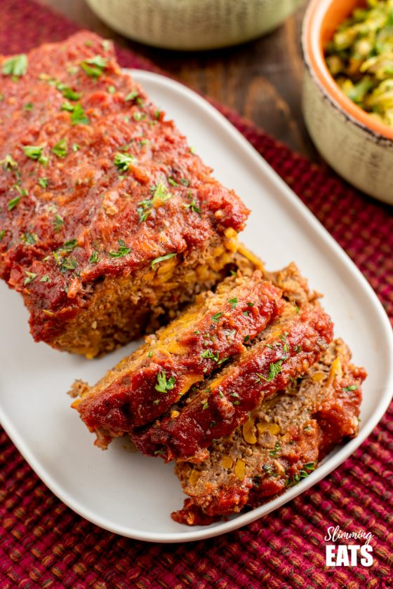

Home
Beef and Sweet Potato Meatloaf

Beef and Sweet potato meatloaf topped with a tomato- maple glaze. A recipe the entire family can enjoy!
- Course: Main course
- Cuisine: American
- Prep Time: 15 mins
- Cook Time: 1 hr
- Total Time: 1 hr 15 minutes
- Servings: 4
Ingredients
Meatloaf
- 500g Extra lean minced beef
- 250g Sweet potato, grated
- 1 Garlic clove, minced
- 1/4 Tsp Onion powder
- 2 Tsp Paprika
- 2 Tsp Oregano
- 1 Tsp Salt
- 1/4 Tsp Black pepper
- 1 Medium egg, beaten
Glaze
- 240ml Passata
- 120ml Chicken or Vegtable stock
- 1 Tbsp Tomato paste
- 1/2 Tsp Onion powder
- 1/2 Tsp Garlic powder
- 2 Tbsp Maple syrup
- Fresh parsley, chopped
- Salt and pepper, to taste
Method
- Pre-heat oven to 180c.
- In a large mixing bowl, add minced beef, sweet potato, garlic, onion powder, paprika, oregano, salt, pepper and egg and combine together.
- Line a loaf tin with some parchment paper.
- Add the meatloaf mixture to the loaf tin and push down well.
- Place in the oven and bake for 45 mins. While the meatloaf is cooking, you can make the glaze.
- Add passata, stock, tomato paste, onion powder, garlic powder and maple syrup to a saucepan and bring to a boil, lowing the heat and simmer until it reduces and thickens. Set aside.
- After the meatloaf has been cooking for 45 mins, pour the sauce ontop of the meatloaf and raise the oven temp. to 200c, cooking for a further 15 mins until the sauce has a nice deep red colour.
- Remove from oven, sprinkle with chopped parsley and allow to rest for approx 10 mins before slicing.
- Serve with your choice of sides. Enjoy!